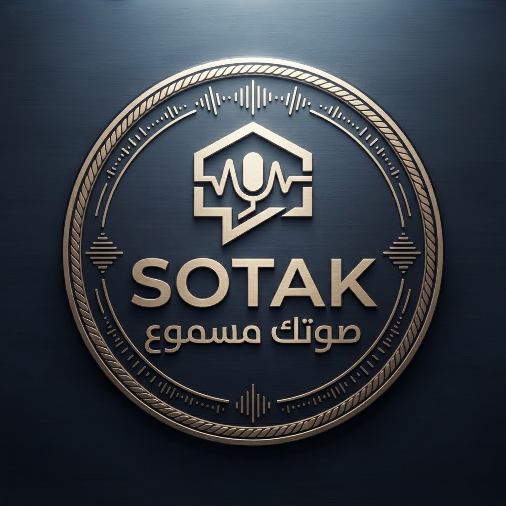

SMART EGYPT
Smart Egypt هي منظومة ذكية تهدف إلى تقديم حلول وخدمات تساعد المواطنين على التعامل مع المشكلات اليومية بطريقة أسهل وأكثر تنظيمًا.
تعرف على المشروعABOUT SMART EGYPT
Smart Egypt ليست تطبيقًا واحدًا، بل هي منظومة يمكن أن تضم مجموعة من الخدمات والتطبيقات الذكية التي تعمل على تقديم حلول للمشكلات التي يواجهها المواطن في حياته اليومية.
تعتمد الفكرة على استخدام التكنولوجيا لجعل الوصول إلى الحلول والخدمات أسهل، مع توفير طريقة منظمة للتواصل والمتابعة.
OUR IDEA
يواجه المواطنون العديد من المشكلات اليومية، وقد يكون من الصعب معرفة الجهة المناسبة للتواصل معها أو متابعة المشكلة بعد الإبلاغ عنها.
لذلك تأتي Smart Egypt كفكرة تجمع مجموعة من الحلول الذكية في منظومة واحدة تساعد على تسهيل هذه العملية.
مشكلة
02حل ذكي
03متابعة
OUR GOALS
تقديم خدمات بسيطة تساعد المواطن على الوصول إلى الحلول بسهولة.
استخدام التكنولوجيا للمساعدة في التعامل مع المشكلات اليومية.
جعل التواصل بين المواطن والخدمات أكثر وضوحًا وتنظيمًا.
إنشاء منظومة قابلة للتطوير وإضافة خدمات جديدة مستقبلًا.
HOW IT WORKS
يختار المواطن الخدمة التي يحتاج إليها.
يقوم المواطن بإدخال التفاصيل المطلوبة بطريقة بسيطة.
يمكن متابعة حالة الطلب ومعرفة آخر التحديثات.
يتم التعامل مع المشكلة ومتابعة حلها.
SMART SERVICES
يمكن أن تضم Smart Egypt مجموعة متنوعة من التطبيقات والخدمات التي يتم تطويرها حسب احتياجات المجتمع.
FEATURED SERVICE
صوتك هو أحد التطبيقات التي يمكن أن تعمل داخل منظومة Smart Egypt، ويهدف إلى إعطاء المواطن وسيلة سهلة للإبلاغ عن المشكلات ومتابعة حلها.
YOUR VOICE MATTERS
من خلال صوتك يستطيع المواطن الإبلاغ عن المشكلات التي يواجهها، وإرسال تفاصيلها، ثم متابعة حالتها ومعرفة ما تم بشأنها.
ابدأ مع صوتك
THE FUTURE
المنظومة مصممة لتكون قابلة للتطوير، بحيث يمكن إضافة المزيد من الخدمات والتطبيقات مستقبلًا لتلبية احتياجات المجتمع المتغيرة.